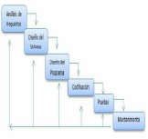
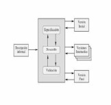
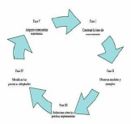
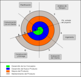

El desarrollo de un sistema debe tener en cuenta unos pilares fundamentales
que nos orientarán a partir de modelos de proceso de Desarrollo de Software,
y nos permitirá adoptar conceptos claros necesarios para lograr un sistema
correcto y adecuado, para el cual de manera inicial, tomaremos en cuenta las
siguientes características:
Claridad:
El proceso de desarrollo es claro cuando se entiende con facilidad.
Visibilidad:
Un proceso de desarrollo es visible cuando sus actividades
producen resultados claros identificables externamente.
Facilidad de soporte:
Exige disponer de herramientas CASE (Computer-Aided
Software Engineering) que den soporte a todas o alguna de las actividades
del proceso de desarrollo.
Fiabilidad:
Un proceso de desarrollo es fiable cuando es capaz de detectar
posibles errores.
Facilidad de mantenimiento:
Requiere capacidad para incorporar nuevos
requisitos o modificar alguno o algunos de los existentes.
Rapidez:
Un proceso software es rápido cuando se puede obtener, a partir de
la especificación, una implementación del sistema en un tiempo reducido.
Al ser verificadas las características y definidas, procedemos a integrar los
diferentes modelos existentes para el desarrollo del software.

Modelo en cascada
Este es el más básico de todos los modelos y ha servido como bloque de construcción para los demás

Modelo evolutivo
Permiten desarrollar versiones cada vez más completas y complejas

Modelo transformacional
Aplica una serie de transformaciones usando un soporte automatizado para convertir una especificación formal

Modelo en espiral
Propuesto originalmente por Boehm, es un modelo de proceso de software evolutivo...